U ventilové vzdušnice je způsob přidělování vzduchu píšťalám obdobný, jako u zásuvkové vzdušnice. Klapkové ventily vpouštějí vzduch do příčných kanálů – tónových kancel, které jej rozvedou pod píšťaly jednotlivých tónů: |
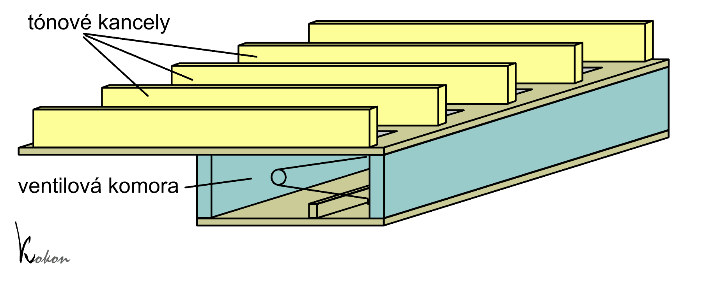
Rozmístění píšťal tónů (v příčném směru) a rejstříků
(v podélném směru) je rovněž stejné, jako u ostatních vzdušnic: |
| |
To, co tento typ vzdušnice odlišuje od ostatních
konstrukcí s tónovými kancelami je způsob přidělování vzduchu píšťalám
jednotlivých rejstříků (podélné ovládání). U zásuvkových vzdušnic plní
tuto funkci zásuvka, u ventilové vzdušnice je to druhá řada ventilů. Princip
jejich práce nastiňuje následující animace řezu jednou tónovou kancelou
s trojicí píšťal (tří rejstříků): |
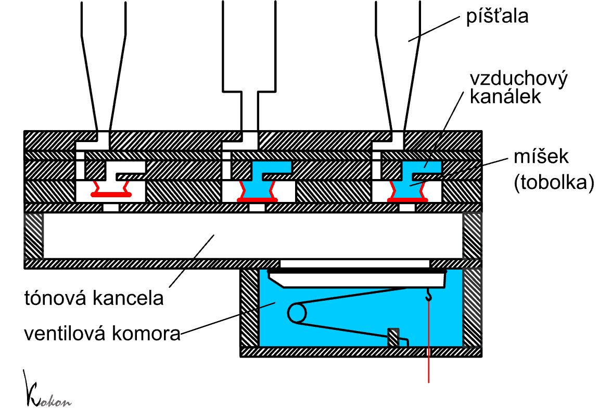
Každá píšťala má přívod vzduchu kanálkem z tónové kancely ovládán pomocí membránového nebo míškového ventilu. Všechny membrány, patřící píšťalám jednoho hlasu (po celé délce vzdušnice) jsou připevněny ke společnému kanálku (na animaci jsou tři kanálky pro tři rejstříky). Ovládáním tlaku vzduchu v tomto kanálku pomocí rejstříkového ventilu řídíme otevírání (vypuštěním vzduchu z kanálku) či zavírání (naplněním kanálku vzduchem) ventilu. 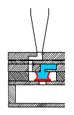Samotný
ventil, používaný u této vzdušnice má nejčastěji podobu tobolkového
míšku – prstence (polštářku, taštičky) z měkké kůže, který je vlepen
mezi dvojici tuhých kroužků (ze dřeva či tvrzeného papíru). Uvnitř míšku
je většinou přídavná pružinka, která zlepšuje těsnící vlastnosti jím
tvořeného ventilu. |
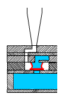Nafoukneme-li míšek stlačeným vzduchem z registračního kanálku, dolní kroužek se přitiskne k otvoru z kancely a brání průchodu vzduchu k píšťale. Rejstřík je tedy vypnutý, jeho píšťaly nezazní ani po naplnění tónové kancely vzduchem po stisknutí kláves (obrázek napravo). 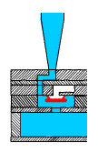Po
vypuštění vzduchu z registračního kanálku (zapnutím rejstříku na hracím
stole, které se přenese trakturou až na ventil, který se postará o příslušné
řízení tlaku vzduchu v kanálku) míšky splasknou. Pokud se v tónové kancele
objeví stlačený vzduch (je stisknuta příslušná klávesa), jeho přetlak
překoná snadno zbytkovou sílu (pružinky a vlastní váhy kroužku míšku)
a volně projde k píšťale. |
Konstrukce ventilů (pod píšťalami) může být různá,
někteří varhanáři používají místo tobolek (kruhových míšků) obdobu klínových
míšků – viz následující obrázky. |
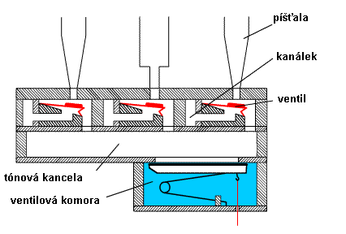
Činnost této varianty vzdušnice je v principu stejná
jako v předešlém případě, ventil (těsnící kroužek) připevněný k pohyblivé
části míšku ovládá přívod vzduchu k píšťale v závislosti na tlaku v registračním
kanálku. |
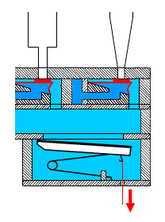 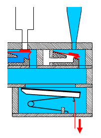 |
Míšky jsou opět připevněny na společném přívodu (kanálku),
jediný rozdíl je ve směru jejich ovládání (uzavírají otvor zespodu ve
směru tlaku, předchozí konstrukce proti tlaku). Další konstrukční variantou je použití čistě membránového ventilu: |
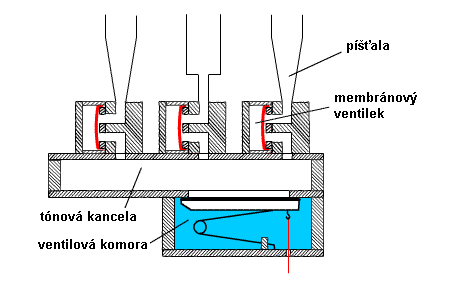
Činnost tohoto typu ventilu je podrobně popsána v
kapitole o komponentech pneumatické
traktury. 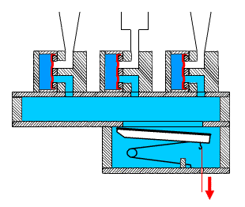Není-li
nad membránou (na obrázku jsou montovány svisle, takže vedle membrány
nalevo) stlačený vzduch, přetlak vzduchu z kancely překoná její pružnost
a projde přes kanálky v bločku až k píšťale. Naplníme-li prostor nad membránou
stlačeným vzduchem (vypneme příslušný rejstřík), membrána se přitiskne
k otvorům v bločku a vzduch se k píšťale nedostane. (obrázek napravo). |
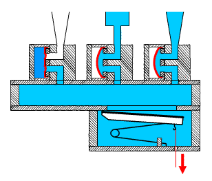Zapneme-li
rejstřík, vypustíme tím z prostoru nad membránou vzduch a zanikne tak
síla, která ji tiskla k otvorům pod ní. Po stisknutí klávesy vzduch z
kancely nafoukne membrány zespodu (na obrázku díky svislé montáži zprava)
a projde volně až do píšťaly. Na obrázku nalevo je zachycen právě tento
okamžik, rejstřík nalevo má v komůrce nad membránou stále stlačený vzduch,
takže zůstává vypnutý, zbývající dva jsou zapnuté a zní. |
Na souvisejících stránkách najdete popis dalších konstrukčních variant vzdušnic s tónovými kancelami. Jsou to zásuvková vzdušnice, a bodcová vzdušnice. Popis pak pokračuje další velkou skupinou vzdušnic s rejstříkovými kancelami - kuželková vzdušnice, membránová vzdušnice a vzdušnice se svislými ventily a skříňovou vzdušnicí (Unit). |
Poznámka: Tato stránka je součástí Anatomie varhan ®, © Ing. Petr Bernat. Všechny animace © Konrad Zacharski